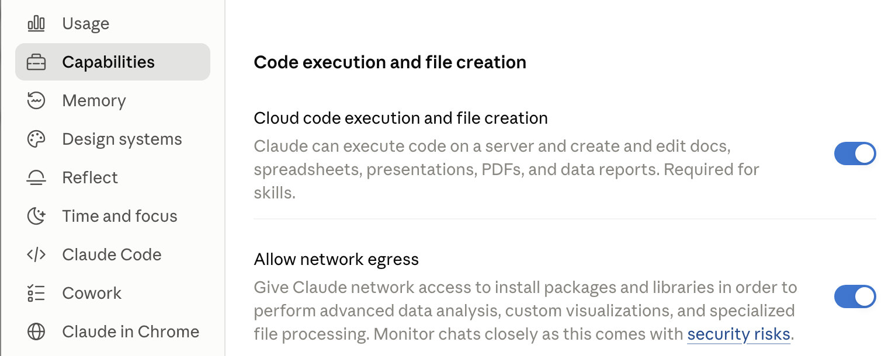
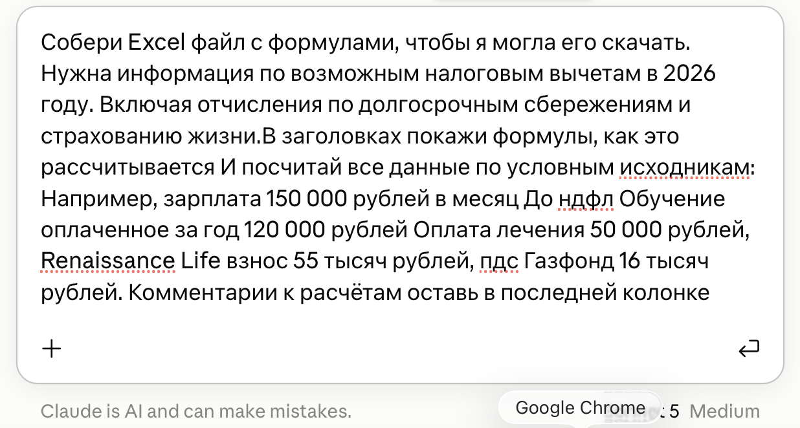
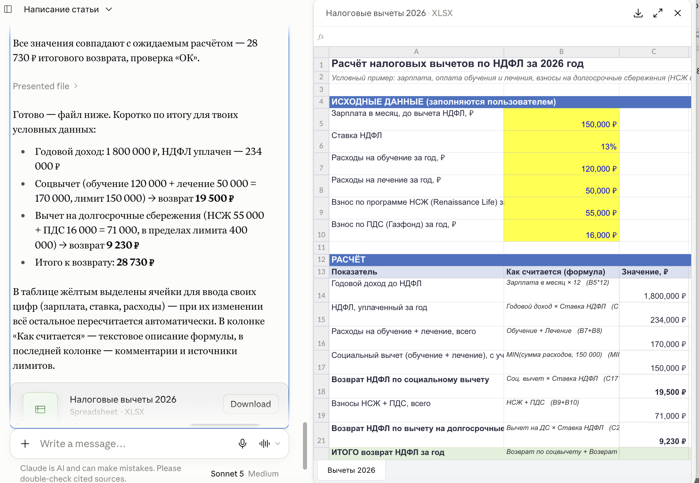
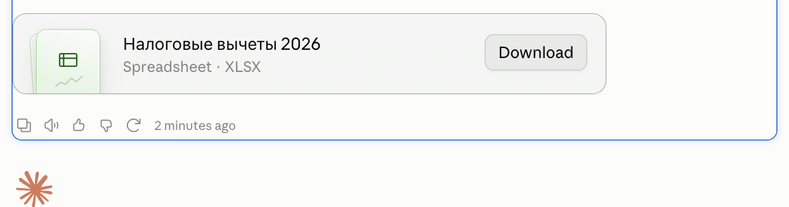
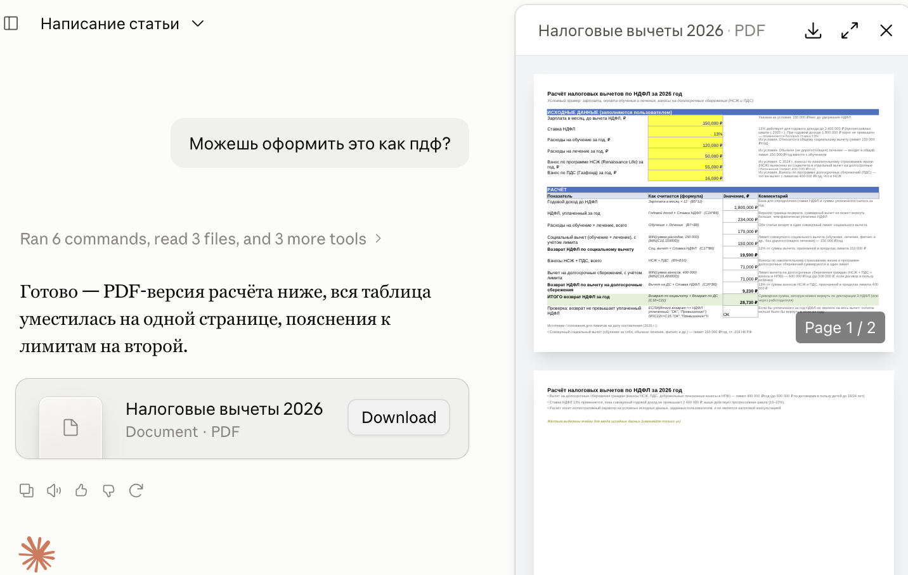

Claude.ai · Готовые файлы
Готовый Excel, Word, PDF или презентация - без копипаста
Ты просишь посчитать - и получаешь красивую таблицу прямо в чате. А дальше начинается ручная работа: выделить, скопировать, вставить в Excel, поправить развалившиеся столбцы, вписать формулы заново. Клод умеет отдавать сразу файл: таблицу с работающими формулами, документ, презентацию. Скачиваешь и открываешь у себя
Короткий маршрут
Capabilities → включить Cloud code execution and file creation → в чате написать «собери Excel-файл с формулами и дай скачать» → нажать Download под файлом
Если ты ещё не вошёл в Claude, сначала пройди «Claude из России: подключение без блокировок». Там доступ и первый чат, а сюда вернёшься заготовыми файлами
Откуда берётся копипаст
Почему таблица приходит текстом
По умолчанию Клод отвечает в чате. Таблица в ответе - это оформленный текст: выглядит как таблица, но внутри неё ничего не считается. Перенесёшь в Excel - приедут одни числа, застывшие на момент ответа. Поменяешь ставку или сумму - ничего не пересчитается, потому что формул там никогда не было
Отдельная функция даёт Клоду собственную рабочую среду: он пишет там код, выполняет его и собирает настоящий файл - .xlsx, .docx, .pptx или .pdf. В таблице появляются живые формулы, в презентации - слайды, и всё это приходит одной кнопкой на скачивание
Разница простая: текстовая таблица в чате - картинка расчёта, файл - сам расчёт. В файле можно поменять свою цифру, и остальное пересчитается само. А если пересчитывать хочется прямо на экране, не скачивая файл, - это уже артефакт
Четыре действия
Как получить готовый файл
Один раз включаешь функцию в настройках, дальше всё делается словами в обычном чате
1. Включи создание файлов
Пока функция выключена, Клод будет отвечать таблицей в чате, сколько ни проси файл. Открой раздел Capabilities и включи верхний тумблер - Cloud code execution and file creation. Под ним прямо написано, что именно он даёт: Клод сможет выполнять код на сервере и создавать документы, таблицы, презентации и PDF. На бесплатном тарифе функция тоже есть

Второй тумблер трогать не обязательно
Allow network egress даёт Клоду выход в сеть, чтобы доставлять себе дополнительные библиотеки для сложного разбора данных. Для обычной таблицы с формулами он не нужен, а в описании рядом стоит предупреждение о рисках - включай осознанно
Результат: в чате появилась возможность собирать файлы, и просьба «собери Excel» теперь выполнима
2. Попроси файл, а не таблицу
Скажи прямо в первом же сообщении: собери файл и дай скачать. Слово «файл» здесь рабочее - без него Клод по привычке ответит текстом. Сразу назови формат и что должно быть внутри: формулы, комментарии, отдельная колонка под пояснения

Результат: Клод считает и собирает файл, а не пересказывает расчёт в чате
3. Скачай по кнопке Download
Готовый файл появляется плиткой внизу ответа: название, тип (Spreadsheet · XLSX) и кнопка Download справа. Рядом Клод коротко пишет, что получилось и что в таблице можно менять. Нажимаешь Download - файл падает в загрузки и открывается в обычном Excel или Numbers


Результат: файл у тебя на компьютере, формулы внутри работают
4. Переделай, не начиная заново
Расчёт уже сделан, поэтому другой формат - это одна фраза, а не новый разговор. «Оформи это как PDF», «собери из этого презентацию», «добавь колонку с комментариями» - Клод берёт готовое и пересобирает в нужном виде

Результат: один расчёт живёт в нескольких форматах, и каждый скачивается отдельно
Можно копировать
Что писать, чтобы пришёл файл
Четыре фразы под частые задачи. Вставляешь, подставляешь своё в квадратные скобки, отправляешь
Excel с работающими формулами
Собери Excel-файл с формулами и дай скачать. Задача: [что нужно посчитать]. Исходные данные условные, вот они: [перечисли свои цифры]. Ячейки для ввода моих цифр выдели цветом, чтобы остальное пересчитывалось само. Отдельной колонкой покажи, как считается каждая строка, а в последней колонке оставь комментарии к расчёту
Тот же расчёт в PDF или Word
Оформи этот же расчёт как [PDF или Word] и дай скачать. Ничего не пересчитывай заново, цифры бери те, что уже получились. Таблицу постарайся уместить на одной странице, а пояснения и оговорки вынеси отдельно
Презентация из готового текста
Собери из этого презентацию в PowerPoint и дай скачать. Тема: [о чём рассказываю], аудитория: [кому показываю], примерно [сколько] слайдов. На каждом слайде одна мысль и короткий заголовок, без стен текста. Там, где есть цифры, поставь таблицу или график
Разобрать свой файл и вернуть новым
Вот мой файл. Посмотри, что внутри, и собери на его основе новый файл: [что нужно получить]. Мои исходные данные не меняй, добавь расчёт отдельными колонками. Если в данных встретятся пропуски или явные ошибки, не выдумывай значения - отдельно напиши, что именно вызвало вопрос
Фраза, которая решает: «дай скачать». Она отделяет просьбу показать от просьбы собрать файл, и с ней Клод почти всегда отвечает плиткой с кнопкой, а не таблицей в чате
Если файла нет
Почему файл не пришёл
Ответ есть, а плитки с кнопкой Download под ним нет. Причин немного, и все проверяются за минуту
Функция выключена
Самое частое. Раздел Capabilities, верхний тумблер Cloud code execution and file creation. Без него Клод отвечает текстом, как бы подробно ты ни описывал нужный файл
В просьбе не было слова «файл»
«Посчитай и покажи таблицу» - это просьба показать, её он и выполняет. Нужен файл - так и напиши, вместе с «дай скачать»
Формат не назван
«Сделай документ» можно понять по-разному. Называй прямо: Excel, Word, PDF, презентация
Файл слишком большой
Предел - 30 МБ на файл, и он работает в обе стороны, на загрузку и на скачивание. Для таблицы с расчётом это много, но огромная выгрузка на сотни тысяч строк в него не поместится
Честные ограничения
Чего файл не сделает
Чтобы не ждать лишнего и не проверять потом наспех
Цифры надо проверять
Файл выглядит убедительно: формулы, колонки, итог. Но Клод мог взять не ту ставку или не тот лимит. Прежде чем нести расчёт куда-то дальше, проверь исходные числа и итог глазами
Это не бухгалтерия и не юрист
Расчёт по твоим условным данным - не консультация. Вопросы про налоги, вычеты и отчётность решаются с тем, кто за это отвечает
Оформление придётся править
Ширина столбцов, шрифты, разрывы страниц - всё это Клод ставит на свой вкус. В Excel и Word это правится за минуту, но ожидать готовый фирменный документ не стоит
Про данные: для расчёта хватает условных цифр - так и пиши: «данные условные, например, зарплата такая-то». Настоящие выписки, договоры и персональные данные загружать не обязательно, а результат будет тот же
Короткие ответы
Частые вопросы
Какие форматы Клод собирает
Excel (.xlsx), Word (.docx), PowerPoint (.pptx) и PDF. Кроме них он может отдать график картинкой
Нужен ли платный тариф
Нет. Функция доступна на всех тарифах, включая бесплатный
Работает ли с телефона
Да: в браузере, в приложении на компьютере и в мобильном приложении
Какой максимальный размер
30 МБ на файл - и когда загружаешь свой, и когда скачиваешь собранный
Можно сохранить сразу в облако
Да, готовый файл можно скачать к себе или сохранить прямо в Google Drive
Можно ли дать Клоду свой файл
Да. Прикрепляешь свою таблицу, просишь разобрать и собрать новый файл на её основе - исходник при этом не меняется
Откуда факты
Источники
- Claude Help Center: Create and edit files with Claude - форматы xlsx, docx, pptx и pdf, предел 30 МБ на файл в обе стороны, тумблер создания файлов в разделе Capabilities, доступность на всех тарифах и сохранение в Google Drive
- Claude blog: Claude can now create and edit files - работающие формулы в таблицах, сборка презентаций и документов, работа в браузере, в приложении на компьютере и на телефоне
Бесплатный практикум
Один файл ты собрал. Дальше - понять, что эта штука вообще умеет
Excel с формулами - это одна кнопка из сотни. ИИ-Лагерь - бесплатный трёхдневный практикум, где показывают, как в принципе работать с Клодом, с Клод-Кодом и с другими ИИ-агентами: что они умеют, чего от них ждать и что нужно сделать, чтобы потом собрать своё. Не по одной кнопке, а целиком, каждый шаг на экране - ты смотришь и повторяешь
Хочу на бесплатный практикум